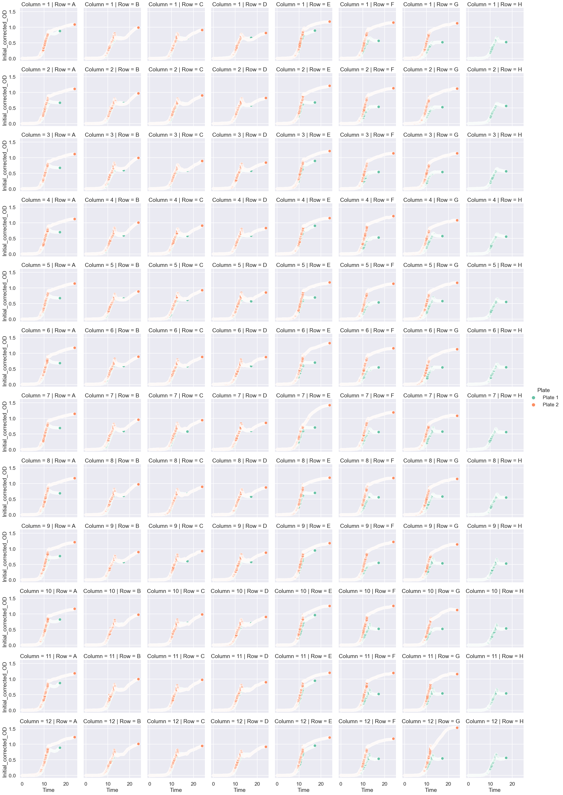
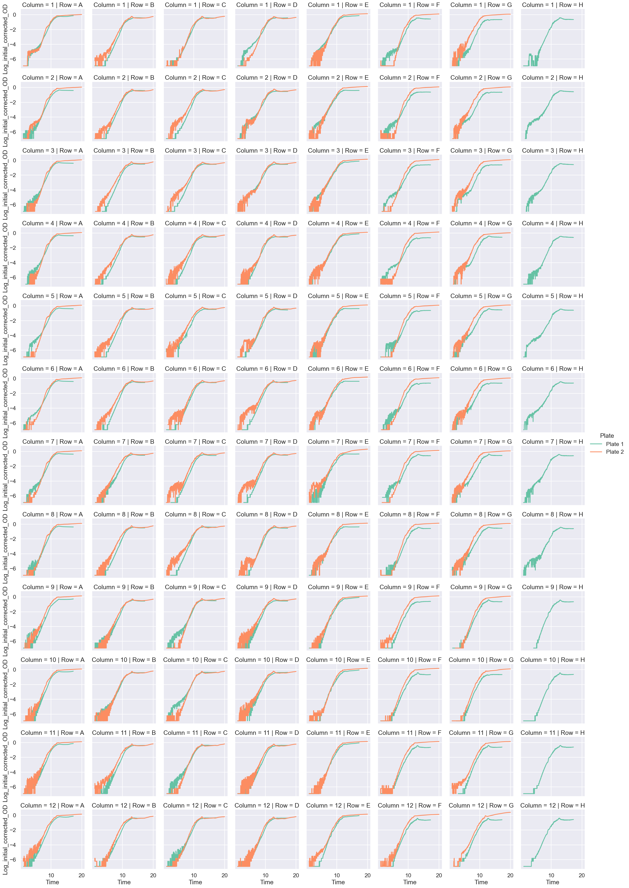
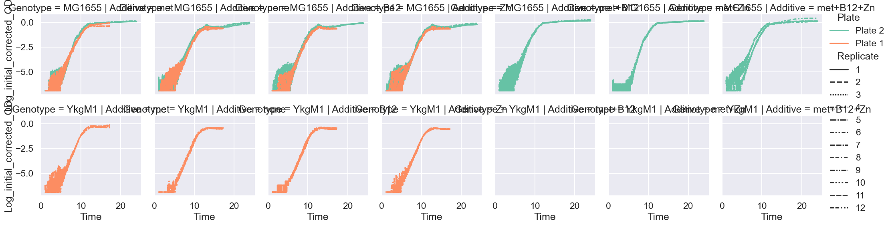
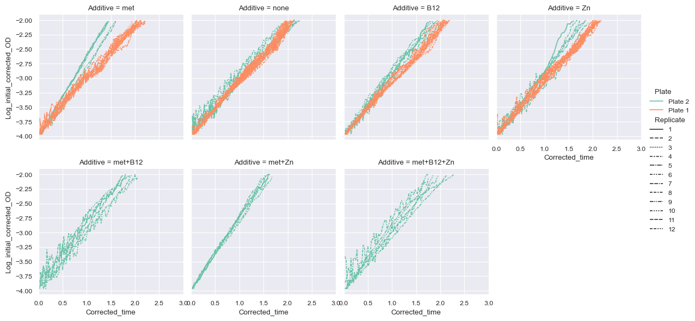
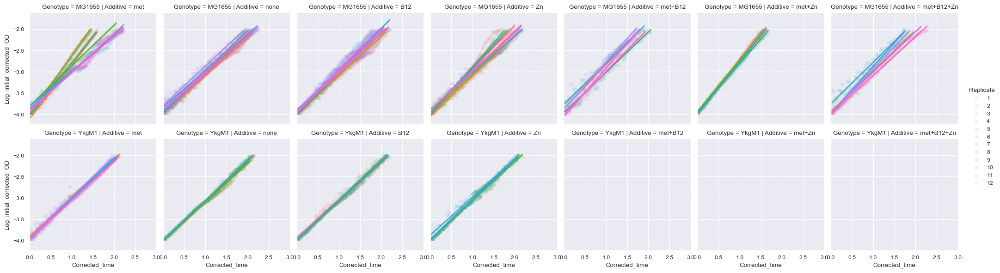
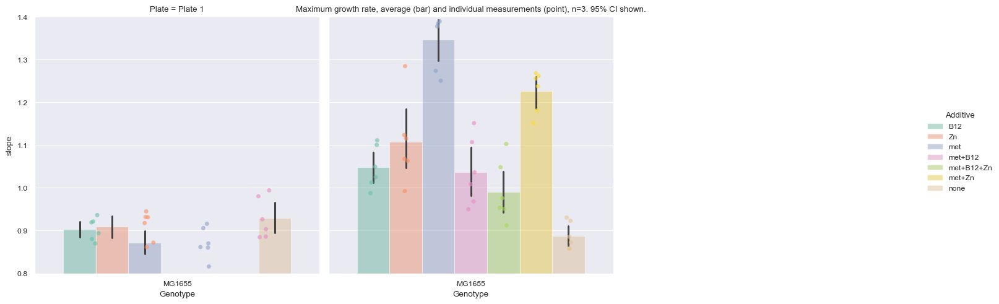

[1]:
import pandas as pd
import numpy as np
import matplotlib.pyplot as plt
import seaborn as sns
import polars as pl
import itertools
import warnings
import pandas as pd
import statsmodels.api as sm
def regress(data, yvar, xvars):
Y = data[yvar]
X = data[xvars]
X['intercept'] = 1.
result = sm.OLS(Y, X).fit()
return result.params
def regress_error(data, yvar, xvars):
Y = data[yvar]
X = data[xvars]
X['intercept'] = 1.
result = sm.OLS(Y, X).fit()
output = list(result.params)
output.extend(list(result.bse))
return pd.Series(output, ["slope", "intercept", "slope_e", "intercept_e"])
sns.set(style="darkgrid", palette="Set2")
Importing multiple plates with different layouts
[2]:
files = [
["growth_data/cyrus_blue_020824.txt",
{"A": "met", "B": "none", "C": "B12", "D": "Zn","E": "met", "F": "none", "G": "Zn", "H": "B12"},
[["1", "2", "3", "4", "5", "6", "7", "8", "9", "10", "11", "12"]],
[["A", "B", "C", "D"], ["E", "F", "G", "H"]],
{"YkgM1": [0, 0], "MG1655": [1, 0]},
12],
# # good?
["growth_data/cyrus_pink_020924.txt",
{"A": "met", "B": "none", "C": "B12", "D": "Zn","E": "met+B12", "F": "met+Zn", "G": "met+B12+Zn", "H": "blank"},
[["1", "2", "3", "4", "5", "6", "7", "8", "9", "10", "11", "12"]],
[["A", "B", "C", "D", "E", "F", "G"]],
{"MG1655": [0, 0]},
12],
# # p bad
# ["growth_data/cyrus_blue_021324.txt",
# {"A": "met", "B": "none", "C": "B12", "D": "Zn","E": "met+B12", "F": "met+Zn", "G": "met+B12+Zn", "H": "blank"},
# [["1", "2", "3", "4", "5", "6", "7", "8", "9", "10", "11", "12"]],
# [["A", "B", "C", "D", "E", "F", "G"]],
# {"MG1655": [0, 0]},
# 12],
# also p bad
# ["growth_data/cyrus_blue_021424.txt",
# {"A": "met", "B": "none", "C": "B12", "D": "Zn","E": "met+B12", "F": "met+Zn", "G": "met+B12+Zn", "H": "blank"},
# [["1", "2", "3", "4", "5", "6", "7", "8", "9", "10", "11", "12"]],
# [["A", "B", "C", "D", "E", "F", "G"]],
# {"MG1655": [0, 0]},
# 12],
# ["growth_data/cyrus_blue_021524.txt",
# {"A": "met", "B": "met", "C": "none", "D": "B12", "E": "Zn","F": "met+B12", "G": "met+Zn", "H": "met+B12+Zn"},
# [["1", "2", "3", "4", "5", "6", "7", "8", "9", "10", "11", "12"]],
# [["A", "B", "C", "D", "E", "F", "G"]],
# {"MG1655": [0, 0]},
# 12],
#200 µM paraquat
# ["growth_data/cyrus_031524_paraquat_Mn.txt",
# {"A": "0 nM Mn", "B": "10^0 nM Mn", "C": "10^1 nM Mn", "D": "10^2 nM Mn",
# "E": "10^3 nM Mn","F": "10^4 nM Mn", "G": "10^5 nM Mn", "H": "10^6 nM Mn"},
# [["1", "2", "3", "4", "5", "6",], [ "7", "8", "9", "10", "11", "12"]],
# [["A", "B", "C", "D", "E", "F", "G", "H"]],
# {"MG1655 + PQ": [0, 0], "MG1655 - PQ": [0, 1]},
# 12],
# ["growth_data/cyrus_031524_paraquat_Mn_part2.txt",
# {"A": "Mn 0", "B": "Mn 1", "C": "Mn 2", "D": "Mn 3", "E": "Mn 4","F": "Mn 5", "G": "Mn 6", "H": "Mn 7"},
# [["1", "2", "3", "4", "5", "6",], [ "7", "8", "9", "10", "11", "12"]],
# [["A", "B", "C", "D", "E", "F", "G", "H"]],
# {"MG1655 + PQ": [0, 0], "MG1655 - PQ": [0, 1]},
# 12],
# ["growth_data/cyrus_032024_paraquat_Mn.txt", 2 µM paraquat
# {"A": "0 nM Mn", "B": "10^0 nM Mn", "C": "10^1 nM Mn", "D": "10^2 nM Mn",
# "E": "10^3 nM Mn","F": "10^4 nM Mn", "G": "10^5 nM Mn", "H": "10^6 nM Mn"},
# [["1", "2", "3", "4", "5", "6",], [ "7", "8", "9", "10", "11", "12"]],
# [["A", "B", "C", "D", "E", "F", "G", "H"]],
# {"MG1655 + PQ": [0, 0], "MG1655 - PQ": [0, 1]},
# 12],
# 20 µM paraquat
# ["growth_data/cyrus_Mn_032724.txt",
# {"A": "0 nM Mn", "B": "10^0 nM Mn", "C": "10^1 nM Mn", "D": "10^2 nM Mn",
# "E": "10^3 nM Mn","F": "10^4 nM Mn", "G": "10^5 nM Mn", "H": "10^6 nM Mn"},
# [["1", "2", "3", "4", "5", "6",], [ "7", "8", "9", "10", "11", "12"]],
# [["A", "B", "C", "D", "E", "F", "G", "H"]],
# {"MG1655 + PQ": [0, 0], "MG1655 - PQ": [0, 1]},
# 12],
]
for i, file in enumerate(files):
fname = file[0]
additive = file[1]
genotype_col = file[2]
genotype_row = file[3]
genotype_combinations = file[4]
n_replicate = file[5]
al = pl.DataFrame(additive).transpose(include_header=True)
al = al.rename({"column": "Row", "column_0": "Additive"})
al = al.with_columns(Plate = pl.lit(f"Plate {i+1}"))
gl = []
for genotype, idx in genotype_combinations.items():
gl.extend([[genotype, x+y] for x in genotype_row[idx[0]] for y in genotype_col[idx[1]]])
gl = pl.DataFrame(gl).transpose()
gl = gl.rename({"column_0": "Genotype", "column_1": "Well"})
gl = gl.with_columns(Plate = pl.lit(f"Plate {i+1}"))
if i == 0:
df = pl.read_csv(fname, separator="\t") # growth_data/cyrus_mutant_013124.txt
df = df.with_columns(Plate = pl.lit("Plate 1"))
df = df.with_columns(N_replicate = n_replicate)
df = df.drop('T600')
gdf = gl
adf = al
else:
df_add = pl.read_csv(fname, separator="\t")
df_add = df_add.with_columns(Plate = pl.lit(f"Plate {i+1}"))
df_add = df_add.with_columns(N_replicate = n_replicate)
df_add = df_add.drop('T600')
df = pl.concat([df, df_add])
gdf = pl.concat([gdf, gl])
adf = pl.concat([adf, al])
# time conversion
df = df.with_columns(pl.col("Time").str.to_time("%H:%M:%S"))
df = df.with_columns(df['Time'].dt.hour().cast(pl.Int64) + df['Time'].dt.minute().cast(pl.Int64) / 60 + df['Time'].dt.second() / 3600)
# get minimum OD measured, used to be 1.5
init_df = df.filter(pl.col("Time") > 1.5).sort(by="Time").drop(["Time"]).melt(id_vars=["Plate"], variable_name="Well", value_name="Initial_OD")
init_df = init_df.group_by(["Plate", "Well"]).min()
init_df_median = df.filter(pl.col("Time") < 5).sort(by="Time").drop(["Time"]).melt(id_vars=["Plate"], variable_name="Well", value_name="Initial_OD_median")
init_df_median = init_df_median.group_by(["Plate", "Well"]).median()
init_df
# blank_df.head(3)
df.head(3)
[2]:
shape: (3, 99)
| Time | A1 | A2 | A3 | A4 | A5 | A6 | A7 | A8 | A9 | A10 | A11 | A12 | B1 | B2 | B3 | B4 | B5 | B6 | B7 | B8 | B9 | B10 | B11 | B12 | C1 | C2 | C3 | C4 | C5 | C6 | C7 | C8 | C9 | C10 | C11 | C12 | … | F2 | F3 | F4 | F5 | F6 | F7 | F8 | F9 | F10 | F11 | F12 | G1 | G2 | G3 | G4 | G5 | G6 | G7 | G8 | G9 | G10 | G11 | G12 | H1 | H2 | H3 | H4 | H5 | H6 | H7 | H8 | H9 | H10 | H11 | H12 | Plate | N_replicate |
|---|---|---|---|---|---|---|---|---|---|---|---|---|---|---|---|---|---|---|---|---|---|---|---|---|---|---|---|---|---|---|---|---|---|---|---|---|---|---|---|---|---|---|---|---|---|---|---|---|---|---|---|---|---|---|---|---|---|---|---|---|---|---|---|---|---|---|---|---|---|---|---|---|---|---|
| f64 | f64 | f64 | f64 | f64 | f64 | f64 | f64 | f64 | f64 | f64 | f64 | f64 | f64 | f64 | f64 | f64 | f64 | f64 | f64 | f64 | f64 | f64 | f64 | f64 | f64 | f64 | f64 | f64 | f64 | f64 | f64 | f64 | f64 | f64 | f64 | f64 | … | f64 | f64 | f64 | f64 | f64 | f64 | f64 | f64 | f64 | f64 | f64 | f64 | f64 | f64 | f64 | f64 | f64 | f64 | f64 | f64 | f64 | f64 | f64 | f64 | f64 | f64 | f64 | f64 | f64 | f64 | f64 | f64 | f64 | f64 | f64 | str | i32 |
| 0.011111 | 0.096 | 0.094 | 0.096 | 0.095 | 0.096 | 0.097 | 0.102 | 0.094 | 0.093 | 0.095 | 0.094 | 0.095 | 0.091 | 0.091 | 0.092 | 0.09 | 0.092 | 0.092 | 0.091 | 0.09 | 0.091 | 0.092 | 0.09 | 0.09 | 0.095 | 0.093 | 0.095 | 0.093 | 0.104 | 0.094 | 0.093 | 0.093 | 0.096 | 0.092 | 0.097 | 0.095 | … | 0.092 | 0.095 | 0.093 | 0.093 | 0.093 | 0.092 | 0.092 | 0.091 | 0.091 | 0.096 | 0.09 | 0.095 | 0.097 | 0.095 | 0.094 | 0.098 | 0.093 | 0.095 | 0.099 | 0.094 | 0.093 | 0.094 | 0.095 | 0.095 | 0.096 | 0.095 | 0.094 | 0.093 | 0.093 | 0.092 | 0.093 | 0.096 | 0.092 | 0.11 | 0.09 | "Plate 1" | 12 |
| 0.036111 | 0.096 | 0.094 | 0.096 | 0.095 | 0.096 | 0.097 | 0.102 | 0.094 | 0.094 | 0.095 | 0.094 | 0.095 | 0.091 | 0.091 | 0.091 | 0.09 | 0.091 | 0.091 | 0.091 | 0.09 | 0.091 | 0.092 | 0.09 | 0.09 | 0.095 | 0.093 | 0.094 | 0.093 | 0.104 | 0.094 | 0.093 | 0.092 | 0.096 | 0.092 | 0.097 | 0.094 | … | 0.092 | 0.095 | 0.093 | 0.092 | 0.092 | 0.091 | 0.092 | 0.09 | 0.091 | 0.096 | 0.09 | 0.096 | 0.097 | 0.095 | 0.093 | 0.097 | 0.092 | 0.095 | 0.099 | 0.094 | 0.093 | 0.094 | 0.094 | 0.095 | 0.096 | 0.095 | 0.094 | 0.093 | 0.093 | 0.092 | 0.093 | 0.095 | 0.092 | 0.11 | 0.09 | "Plate 1" | 12 |
| 0.061111 | 0.096 | 0.094 | 0.096 | 0.095 | 0.096 | 0.097 | 0.102 | 0.094 | 0.094 | 0.095 | 0.094 | 0.095 | 0.091 | 0.091 | 0.092 | 0.09 | 0.091 | 0.092 | 0.091 | 0.09 | 0.091 | 0.092 | 0.09 | 0.09 | 0.095 | 0.093 | 0.095 | 0.093 | 0.105 | 0.094 | 0.092 | 0.092 | 0.096 | 0.092 | 0.097 | 0.094 | … | 0.092 | 0.095 | 0.093 | 0.092 | 0.093 | 0.092 | 0.092 | 0.09 | 0.091 | 0.093 | 0.09 | 0.096 | 0.097 | 0.095 | 0.093 | 0.095 | 0.092 | 0.095 | 0.099 | 0.094 | 0.093 | 0.094 | 0.094 | 0.095 | 0.096 | 0.095 | 0.094 | 0.093 | 0.093 | 0.093 | 0.093 | 0.095 | 0.093 | 0.111 | 0.09 | "Plate 1" | 12 |
[3]:
# melt to experiments
mdf = df.melt(id_vars=["Time", "Plate", "N_replicate"], variable_name="Well", value_name="OD")
mdf = mdf.with_columns((mdf["Well"].str.slice(0,1)).alias("Row"))
mdf = mdf.with_columns((mdf["Well"].str.slice(1)).alias("Column"))
mdf = mdf.join(adf, on=["Plate", "Row"])
mdf = mdf.join(gdf, on=["Plate", "Well"])
mdf = mdf.join(init_df, on=["Well", "Plate"])
mdf = mdf.join(init_df_median, on=["Well", "Plate"])
mdf = mdf.with_columns( ((pl.col("Column").cast(pl.Int32) + pl.col("N_replicate") - 1) % pl.col("N_replicate") + 1).alias("Replicate"))
# mdf = mdf.with_columns(((pl.col("Column").cast(pl.Int32)+3) % 4 + 1).alias("Replicate"))
# mdf = mdf.with_columns(((pl.col("Column").cast(pl.Int32)+11) % 12 + 1).alias("Replicate"))
# mdf.group_by(["Plate","Additive","Genotype"]).size()
# mdf = mdf.filter(pl.col("Genotype") == "MG1655")
[4]:
mdf = mdf.with_columns([
(pl.col("OD") - pl.col("Initial_OD")).alias("Initial_corrected_OD"),
])
mdf = mdf.with_columns([
(pl.col("OD") - pl.col("Initial_OD_median")).alias("Initial_median_corrected_OD"),
])
mdf.head(5)
[4]:
shape: (5, 14)
| Time | Plate | N_replicate | Well | OD | Row | Column | Additive | Genotype | Initial_OD | Initial_OD_median | Replicate | Initial_corrected_OD | Initial_median_corrected_OD |
|---|---|---|---|---|---|---|---|---|---|---|---|---|---|
| f64 | str | i32 | str | f64 | str | str | str | str | f64 | f64 | i32 | f64 | f64 |
| 0.011111 | "Plate 1" | 12 | "A1" | 0.096 | "A" | "1" | "met" | "YkgM1" | 0.096 | 0.097 | 1 | 0.0 | -0.001 |
| 0.036111 | "Plate 1" | 12 | "A1" | 0.096 | "A" | "1" | "met" | "YkgM1" | 0.096 | 0.097 | 1 | 0.0 | -0.001 |
| 0.061111 | "Plate 1" | 12 | "A1" | 0.096 | "A" | "1" | "met" | "YkgM1" | 0.096 | 0.097 | 1 | 0.0 | -0.001 |
| 0.086111 | "Plate 1" | 12 | "A1" | 0.096 | "A" | "1" | "met" | "YkgM1" | 0.096 | 0.097 | 1 | 0.0 | -0.001 |
| 0.111111 | "Plate 1" | 12 | "A1" | 0.096 | "A" | "1" | "met" | "YkgM1" | 0.096 | 0.097 | 1 | 0.0 | -0.001 |
[5]:
sns.set_context("talk")
sns.relplot(x="Time", y="Initial_corrected_OD", hue="Plate", col="Row", row="Column", \
# row="Genotype",
height=3, \
# col_wrap=4,
data=mdf)
[5]:
<seaborn.axisgrid.FacetGrid at 0x106f67340>

[6]:
f_mdf = mdf.filter(pl.col("Time") > 1).filter(pl.col("Initial_corrected_OD") > 0)
f_mdf = f_mdf.with_columns([
((pl.col("Initial_corrected_OD")).log())
.alias("Log_initial_corrected_OD")
])
f_mdf = f_mdf.with_columns([
((pl.col("Initial_median_corrected_OD")).log())
.alias("Log_initial_median_corrected_OD")
])
f_mdf = f_mdf.filter(pl.col("Log_initial_corrected_OD").is_not_nan())
[7]:
with warnings.catch_warnings():
warnings.simplefilter('ignore')
sns.relplot(x="Time", y="Log_initial_corrected_OD", hue="Plate", kind="line", row="Column", col="Row", height=3, \
data=f_mdf.filter(pl.col("Time") < 20))

[8]:
gr_df = f_mdf.filter( (pl.col("Time") < 20))
minimum_start_times = gr_df.filter(pl.col("Log_initial_corrected_OD") <= -4).group_by(["Plate", "Well"]).agg(pl.max("Time").alias("Time_exp_start")).sort("Time_exp_start")
minimum_end_times = gr_df.filter(pl.col("Log_initial_corrected_OD") >= -2).group_by(["Plate", "Well"]).agg(pl.min("Time").alias("Time_exp_end")).sort("Time_exp_end")
gr_df = gr_df.join(minimum_start_times, on=["Plate", "Well"])
gr_df = gr_df.join(minimum_end_times, on=["Plate", "Well"])
gr_df = gr_df.filter((pl.col("Time") > pl.col("Time_exp_start")) & (pl.col("Time") < pl.col("Time_exp_end")))
gr_df = gr_df.with_columns((pl.col("Time") - pl.col("Time_exp_start")).alias("Corrected_time"))
gr_df.head(5)
# regress and pick top x
predicted_gr = gr_df \
.to_pandas().groupby(['Genotype', 'Additive','Replicate', 'Plate']).apply(regress_error, 'Log_initial_corrected_OD', ['Corrected_time']).reset_index()
M = 0
N = 6
top_gr = pl.DataFrame(predicted_gr.sort_values(by=["Genotype", "Additive", "Plate", "slope"], ascending=False).groupby(['Genotype', 'Additive', 'Plate']).nth[M:N])
top_gr.head(7)
gr_df = gr_df.join(top_gr, on=["Additive", "Plate", "Replicate", "Genotype"])
/var/folders/dx/0239zgvj0tgf46b5h8l7v_fc0000gn/T/ipykernel_51909/739033653.py:13: DeprecationWarning: DataFrameGroupBy.apply operated on the grouping columns. This behavior is deprecated, and in a future version of pandas the grouping columns will be excluded from the operation. Either pass `include_groups=False` to exclude the groupings or explicitly select the grouping columns after groupby to silence this warning.
.to_pandas().groupby(['Genotype', 'Additive','Replicate', 'Plate']).apply(regress_error, 'Log_initial_corrected_OD', ['Corrected_time']).reset_index()
[9]:
with warnings.catch_warnings():
warnings.simplefilter('ignore')
sns.relplot(x="Time", y="Log_initial_corrected_OD", hue="Plate", kind="line", row="Genotype", col="Additive", style="Replicate", height=3, \
data=f_mdf.join(top_gr, on=["Additive", "Plate", "Replicate", "Genotype"]))
# plt.savefig("weird_plate.png")

[10]:
with warnings.catch_warnings():
warnings.simplefilter('ignore')
sns.set_context("paper")
sns.relplot(x="Corrected_time", y="Log_initial_corrected_OD", hue="Plate", kind="line", col="Additive", style="Replicate",
col_wrap=4,
# row="Genotype",
height=3, \
data=gr_df)
plt.xlim([0,3])
# plt.savefig("plates.png")

[11]:
sns.lmplot(x="Corrected_time", y="Log_initial_corrected_OD", hue="Replicate", col="Additive",
# col_wrap=4, \
row="Genotype",
height=3,
data=gr_df.to_pandas(), scatter_kws = {"alpha": 0.1})
plt.xlim([0,3])
[11]:
(0.0, 3.0)

[12]:
# sns.relplot(x="Time", y="Log_initial_corrected_OD", kind="line", row="Replicate", col="Additive", height=3, \
# data=f_mdf.filter(pl.col("Time") < 15))
[13]:
# sns.set_context("paper")
# sns.relplot(x="Time", y="Initial_corrected_OD", hue="Plate", style="Replicate", kind="scatter", col="Additive", \
# # row="Genotype", height=3, \
# col_wrap=4,
# data=mdf)
[14]:
predicted_gr = gr_df \
.to_pandas().groupby(['Genotype', 'Additive','Replicate', 'Plate']).apply(regress_error, 'Log_initial_corrected_OD', ['Corrected_time'])
predicted_gr["doubling_time"] = np.log(2) / predicted_gr["slope"]
predicted_gr = predicted_gr.reset_index()
gr_mean_std = predicted_gr.groupby(['Genotype', 'Additive']).agg({'slope':['mean','std']})
gr_mean_std.columns = gr_mean_std.columns.get_level_values(1)
gr_mean_std["doubling_time"] = np.log(2)/gr_mean_std["mean"]
# gr_mean_std = gr_mean_std.reset_index()
predicted_gr["doubling_time"] = np.log(2)/predicted_gr["slope"]
predicted_gr
/var/folders/dx/0239zgvj0tgf46b5h8l7v_fc0000gn/T/ipykernel_51909/544480332.py:2: DeprecationWarning: DataFrameGroupBy.apply operated on the grouping columns. This behavior is deprecated, and in a future version of pandas the grouping columns will be excluded from the operation. Either pass `include_groups=False` to exclude the groupings or explicitly select the grouping columns after groupby to silence this warning.
.to_pandas().groupby(['Genotype', 'Additive','Replicate', 'Plate']).apply(regress_error, 'Log_initial_corrected_OD', ['Corrected_time'])
[14]:
| Genotype | Additive | Replicate | Plate | slope | intercept | slope_e | intercept_e | doubling_time | |
|---|---|---|---|---|---|---|---|---|---|
| 0 | MG1655 | B12 | 1 | Plate 1 | 0.893910 | -4.024589 | 0.004011 | 0.005080 | 0.775410 |
| 1 | MG1655 | B12 | 1 | Plate 2 | 1.100492 | -4.022322 | 0.009637 | 0.009841 | 0.629852 |
| 2 | MG1655 | B12 | 4 | Plate 1 | 0.919232 | -4.007174 | 0.004642 | 0.005678 | 0.754051 |
| 3 | MG1655 | B12 | 7 | Plate 2 | 0.987671 | -4.001742 | 0.010589 | 0.012648 | 0.701800 |
| 4 | MG1655 | B12 | 9 | Plate 1 | 0.936275 | -3.946152 | 0.011471 | 0.014694 | 0.740324 |
| ... | ... | ... | ... | ... | ... | ... | ... | ... | ... |
| 85 | YkgM1 | none | 3 | Plate 1 | 0.938877 | -4.011636 | 0.007643 | 0.009570 | 0.738273 |
| 86 | YkgM1 | none | 4 | Plate 1 | 0.908694 | -4.014494 | 0.008406 | 0.010283 | 0.762795 |
| 87 | YkgM1 | none | 5 | Plate 1 | 0.920192 | -4.008047 | 0.009055 | 0.010685 | 0.753264 |
| 88 | YkgM1 | none | 6 | Plate 1 | 0.952904 | -4.006978 | 0.006226 | 0.007436 | 0.727405 |
| 89 | YkgM1 | none | 8 | Plate 1 | 0.927989 | -3.985137 | 0.007154 | 0.008854 | 0.746935 |
90 rows × 9 columns
[17]:
with warnings.catch_warnings():
warnings.simplefilter('ignore')
filter_df = pl.DataFrame(predicted_gr).filter((pl.col("Genotype") == "MG1655"))
filter_df.head(5)
g = sns.catplot(x="Genotype", y="slope", hue="Additive",
data=filter_df.to_pandas(), kind="bar",
height=5, aspect=1, alpha=0.5, errorbar="ci",
col="Plate", col_wrap=3
);
g.map_dataframe(sns.stripplot, x="Genotype", y="slope",
hue="Additive", palette="Set2",
alpha=0.6, dodge=True)
plt.title("Maximum growth rate, average (bar) and individual measurements (point), n=3. 95% CI shown.")
plt.ylim([0.8, 1.4])
plt.show()
# g.savefig("story1.png")

[ ]:
# with warnings.catch_warnings():
# warnings.simplefilter('ignore')
# filter_df = pl.DataFrame(predicted_gr).filter((pl.col("Genotype") == "MG1655"))
# filter_df.head(5)
# g = sns.catplot(x="Genotype", y="slope", hue="Additive",
# data=filter_df.to_pandas(), kind="bar",
# height=5, aspect=1, alpha=0.5, hue_order=["none", "Zn", "B12", "met"], errorbar="ci");
# g.map_dataframe(sns.stripplot, x="Genotype", y="slope",
# hue="Additive", palette="Set2",
# alpha=0.6, dodge=True, hue_order=["none", "Zn", "B12", "met"])
# plt.title("Minimum doubling time, average (bar) and individual measurements (point), n=3. 95% CI shown.")
# plt.ylim([1, 1.3])
# plt.show()
# # g.savefig("story1.png")
[ ]: